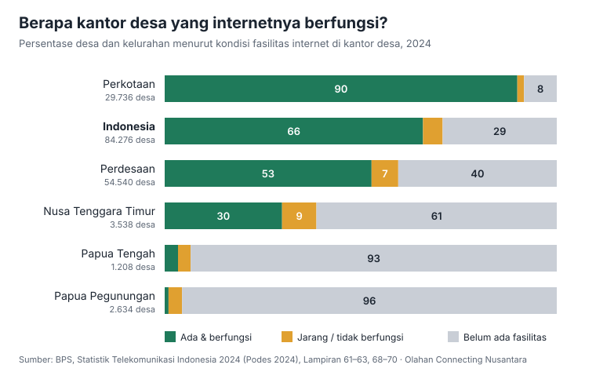

Artikel · Data & Statistik
Sinyal ada, tapi apakah internet di kantor desa berfungsi?
19 November 2026 · 4 menit baca
Ketika membicarakan kesenjangan digital, pertanyaan pertama biasanya: apakah sinyal sudah sampai? Untuk sebagian besar desa di Indonesia, jawabannya sudah "ya". Tetapi sinyal di udara belum tentu berarti internet yang bisa dipakai. Salah satu tempat paling sederhana untuk mengujinya adalah kantor desa, tempat warga mengurus surat, perangkat desa menyusun laporan, dan program pemerintah sampai ke masyarakat.
Artikel ini memakai data Potensi Desa (Podes) 2024 yang dimuat BPS dalam Statistik Telekomunikasi Indonesia 2024. Podes mencatat kondisi di 84.276 desa dan kelurahan di 38 provinsi, sehingga kita bisa melihat dua hal sekaligus: seberapa kuat sinyal seluler di setiap desa, dan apakah kantor desanya punya fasilitas internet yang berfungsi.
Sinyal: hampir semua desa sudah terjangkau
Menurut Podes 2024, sinyal telepon seluler sudah diterima di 96,3% desa/kelurahan. Sebanyak 78,8% desa menerima sinyal kuat atau sangat kuat, 17,5% menerima sinyal lemah, dan hanya 3.117 desa (3,7%) yang sama sekali tidak menerima sinyal.
Desa tanpa sinyal itu hampir semuanya berada di perdesaan (3.090 dari 3.117 desa), dan sebagian besar di timur Indonesia. Di kelompok pulau Maluku dan Papua, 25,1% desa tidak menerima sinyal sama sekali, sementara di Jawa angkanya hanya 0,02%. Papua Pegunungan dan Papua Tengah adalah dua provinsi dengan kondisi paling berat: lebih dari separuh desanya (55,4% dan 52,3%) belum menerima sinyal.
Kantor desa: 3 dari 10 belum punya fasilitas internet
Gambarnya berubah ketika kita beralih dari sinyal ke kantor desa. Secara nasional, 59.747 kantor desa (70,9%) punya fasilitas internet, dan sebagian besar (92,9%) berfungsi. Artinya sekitar 24.500 desa, atau 29,1%, belum punya fasilitas internet di kantor desanya, meskipun banyak di antaranya sudah menerima sinyal.

Perbedaan kota dan desa terlihat jelas:
- Perkotaan: 90 dari 100 kelurahan/desa punya internet kantor desa yang berfungsi, dan hanya 8 yang belum punya fasilitas sama sekali.
- Perdesaan: hanya 53 dari 100 desa yang internet kantornya berfungsi. 40 desa belum punya fasilitas, dan 7 lainnya punya tetapi jarang atau tidak berfungsi.
Jadi bukan hanya soal ada atau tidaknya fasilitas. Di perdesaan, 3.713 kantor desa (11,4% dari yang punya fasilitas) melaporkan internetnya jarang atau tidak berfungsi, sementara di perkotaan angkanya hanya 1,9%. Fasilitas yang sudah dibangun belum tentu terus bisa dipakai.
Di Papua, kesenjangannya berlapis
Di beberapa provinsi, angka-angka ini jauh di bawah rata-rata nasional:
- Papua Pegunungan: dari 2.634 desa, hanya 117 kantor desa yang punya fasilitas internet, dan dari jumlah itu hanya sekitar 26 yang berfungsi. Kurang dari 1 dari 100 desa punya internet kantor desa yang bisa dipakai.
- Papua Tengah: 80 dari 1.208 kantor desa punya fasilitas internet, dan sekitar separuhnya berfungsi.
- Nusa Tenggara Timur: sinyal sudah menjangkau hampir semua desa (hanya 0,6% tanpa sinyal), tetapi 61% desa belum punya fasilitas internet di kantor desa.
Kasus NTT menarik karena menunjukkan bahwa sinyal saja tidak cukup. Masalahnya bergeser dari jangkauan jaringan ke hal lain: perangkat, biaya langganan, listrik, dan orang yang bisa merawat fasilitasnya. Di sisi lain, DI Yogyakarta, Jawa Tengah, Bali, dan DKI Jakarta melaporkan hampir 100% kantor desanya sudah punya fasilitas internet.
Mengapa ini penting?
Kantor desa adalah titik pertemuan antara warga dan negara. Ketika layanan administrasi, pelaporan, dan informasi program pemerintah semakin banyak dilakukan secara daring, kantor desa tanpa internet yang berfungsi membuat perangkat desa harus mencari koneksi di tempat lain, dan warga harus menunggu lebih lama.
Data ini juga mengingatkan kita bahwa kesenjangan digital punya beberapa lapis. Lapis pertama adalah jangkauan sinyal, yang sudah hampir tuntas di sebagian besar Indonesia. Lapis berikutnya adalah fasilitas yang benar-benar ada dan berfungsi di tempat layanan publik, dan di sinilah perdesaan serta Indonesia timur masih tertinggal jauh. Membangun menara BTS saja belum cukup. Fasilitas di kantor desa juga perlu dipastikan tersedia, dirawat, dan dipakai.
Catatan tentang data
- Data berasal dari Podes 2024, yang mengumpulkan informasi di tingkat desa/kelurahan. Kondisi fasilitas ("berfungsi", "jarang berfungsi", "tidak berfungsi") adalah kondisi yang dilaporkan saat pendataan, bukan hasil pengukuran kecepatan internet.
- "Desa" dalam artikel ini mencakup desa dan kelurahan, sesuai cakupan Podes.
- Angka per provinsi dan per wilayah dapat diunduh di Data Explorer dan Katalog Data Nusantara Data 2.0 (dataset Lampiran 61–63 dan 67–70, Statistik Telekomunikasi Indonesia 2024).
Podes desa kantor desa sinyal seluler infrastruktur